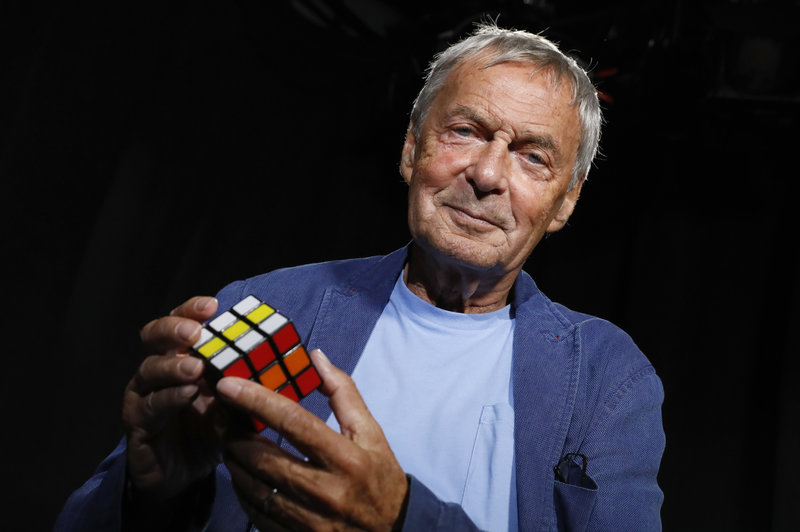
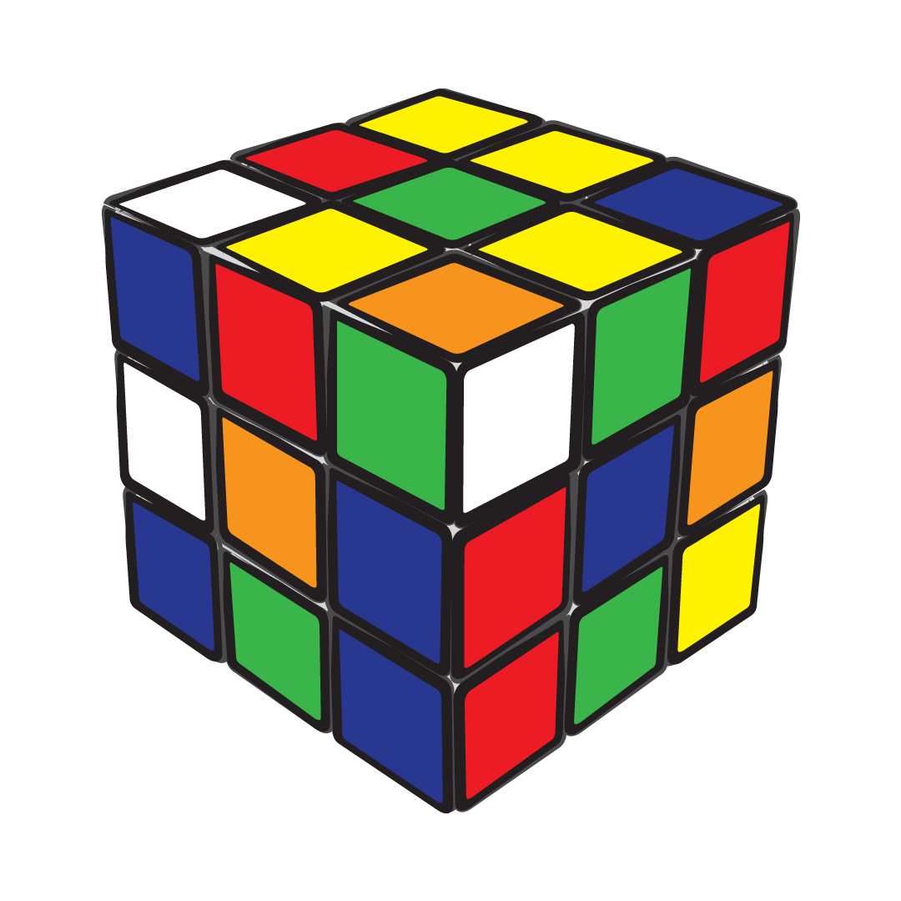

Nacimiento del cubo de Rubik
El Cubo de Rubik es un puzzle del tipo rompecabezas creado por un arquitecto húngaro nombrado Ernö Rubik en el año 1974. El primer nombre de este puzzle fue Cubo Magico.
El objetivo de crear este puzzle se cree de manera incorrecta que fue una herramienta escolar para para ayudar a los alumnos a entender los objetos tridimensionales. Realmente Ernö lo creo para resolver el problema de lograr mover partes independientemente sin que el mecanismo principal se desmorone.
Un cubo de Rubik clásico posee seis colores uniformes (tradicionalmente blanco, rojo, azul, naranja, verde y amarillo). Un mecanismo de ejes permite a cada cara girar independientemente, mezclando así los colores. Para resolver el rompecabezas, cada cara debe volver a quedar en un solo color.
Existen variaciones con diversos números de cuadrados por cara. Las principales versiones que hay son las siguientes: el 3×3×3, el cubo de Rubik original, 4x4x4 (La venganza de Rubik), 5x5x5 (El cubo del profesor) y hay desde este hasta 33x33x33.
Un cubo de Rubik estándar mide 5,7 cm en cada lado, aunque existen variaciones. El rompecabezas consta de 27 piezas o cubos pequeños. Cada una incluye una extensión interna oculta que se entrelaza con los otros cubos, mientras les permite moverse a diferentes posiciones. Sin embargo, las piezas centrales de cada una de las seis caras son simplemente un cuadrado fijado al mecanismo principal. Esto provee la estructura para que las otras piezas quepan y giren alrededor. De este modo hay 21 piezas: una pieza central consistente de tres ejes que sostienen los seis centros cuadrados en su lugar pero dejando que giren y 20 piezas de plástico que caben en él para formar el rompecabezas montado.
El cubo celebró su 25.º aniversario en 2005, por lo que salió a la venta una edición especial del mismo en la que la cara blanca fue remplazada por una reflectante en la que se leía «Rubik's Cube 1980-2005». En su 30.º aniversario, en 2010, se comercializó otra edición especial fabricada en madera.